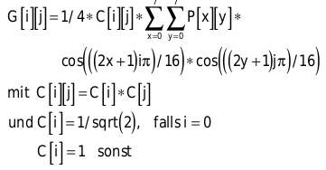
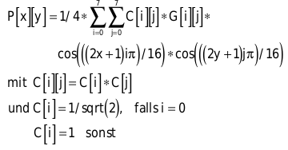

Effiziente Datenkompression in C
Gewinnbringender Verlust
Der Sonnenuntergang auf Ihren Urlaubsfotos verliert auch durch kleine Farbänderungen nicht an Qualität – dafür gewinnen Sie Speicherplatz.
Carsten Dachsbacher
Grafiken in TrueColor-Auflösung enthalten meist viele Informationen, die das menschliche Auge kaum oder gar nicht wahrnimmt. Diese lassen sich durch Quantisierung beseitigen. Das Ergebnis verdichten Sie durch statistische Methoden.
Als ein statistisches Verfahren haben Sie in der letzten Ausgabe die Huffman-Codierung kennengelernt. Sie weist den Eingabesymbolen die optimalen Bitcodes zu. Häufig auftretende Zeichen werden durch kurze Bitcodes ersetzt, seltene Symbole generieren einen längeren Ausgabecode.
Die Huffman-Codierung ist allerdings nur anwendbar, wenn Sie mit Bitcodes arbeiten. Ein Bitcode besitzt immer eine ganzzahlige Länge. Was aber, wenn der optimale Code zu einem Eingabesymbol nicht 3 oder 4, sondern 3.7 Bit lang sein müsste?
Arithmetische Datenkompression
Solche Codes können Sie weder berechnen noch speichern. Dieses Manko behebt die arithmetische Datenkompression. Sie arbeitet mit einem Wahrscheinlichkeitsintervall von 0.0 bis 1.0 . Dabei ist 0.0 noch im Intervall enthalten, 1.0 hingegen nicht.
Dieses Intervall unterteilen Sie in einzelne Abschnitte, die Sie den Eingabesymbolen zuordnen. Je öfter ein Symbol auftritt, desto größer ist sein Teilintervall (vgl. Tabelle links unten).
Mit diesen Informationen können Sie den Encoder starten. Die Berechnungen mit Hilfe der unteren und oberen Intervallgrenzen Low bzw. High sehen in Pseudocode so aus:
Low = 0.0;
High = 1.0;
<Für alle Symbole>:
{
HighSymbol = <obere Intervallgrenze des Eingabezeichens>;
LowSymbol = <untere Intervallgrenze des Eingabezeichens>;
Range = High - Low;
Low = Low + Range * LowSymbol;
High = Low + Range * HighSymbol;
}
Mit unseren Beispielwahrscheinlichkeiten und der zu codierenden Eingabe BCAB ergeben sich die (Zwischen-) Ergebnisse aus folgender Tabelle:
Das Ergebnis dieser Kompression ist die Zahl 0.755, die als letzter Low-Wert übrig bleibt. Im Decoder prüfen Sie die Wahrscheinlichkeiten und Intervalle der Symbole nach. Anhand der Zahl, die er als Eingabe erhält, identifiziert er das zu decodierende Zeichen. Er prüft, in welchem Intervall die aktuelle Zahl liegt.
Hat er herausgefunden, um welches Symbol es sich handelt, vergrößert er die Zahl bzw. das Intervall. Die Vergrößerung ergibt sich durch das Intervall des identifizierten Symbols:
<Für alle Symbole>:
{
<Identifiziere Symbol durch Prüfung,
in welchem Symbolintervall die Zahl liegt>
Range = HighSymbol - LowSymbol;
Number = Number - LowSymbol;
Number = Number / Range;
}
In unserem Beispiel läuft die Decodierung wie in der Tabelle dargestellt:
Zum Entpacken teilen Sie dem Decoder mit, wie viele Zeichen Sie erwarten. Alternativ können Sie ein spezielles Dateiende-Symbol (EOF) einführen. Sonst würde der Decoder beliebig viele Zeichen decodieren und ab einer bestimmten Stelle nur Datenmüll hervorbringen.
So faszinierend es klingt, eine ganze Datei durch eine einzige Zahl darzustellen und zu speichern: Mit wachsendem Informationsgehalt einer Nachricht nimmt beim Kompressionsergebnis die Anzahl der Stellen hinterm Komma zu. Das erhöht den Speicherplatzbedarf. Eine komplexe Abhandlung über den Sinn des Universums können Sie nicht durch eine einfache Zahl repräsentieren.
Heutige Prozessoren stellen Ihnen keine Fließkomma-Zahlen mit einer Genauigkeit zur Verfügung, die für die Kompression größerer Dateien ausreichen würde. Schließlich könnte jede Rundung bei den Berechnungen das Ergebnis verfälschen. Deshalb vertrauen in Ihren Algorithmen ganz auf Integerzahlen. Dazu skalieren Sie das Intervall [0.0, 1.0] auf die Größe einer 16-Bit-Zahl, also auf [0, 65536]. Da Sie mit ganzen Zahlen arbeiten, entspricht dies dem Intervall [0, 65535].
Damit ergeben sich in unserem Beispiel die in der folgenden Tabelle dargestellten Teilintervalle:
Durch die Skalierung der Wahrscheinlichkeitsintervalle stellen Sie sicher, dass Sie als Ergebnis nur 16-Bit-Zahlen erhalten. Beim Rechnen mit den beliebig langen Zahlen, die bei der Kompression entstehen können, wenden Sie einen Trick an: Sie behalten jeweils nur 16 Bit einer Zahl im Speicher, die restlichen schieben Sie bei Bedarf nach:
Im temporären Speicher:
1001 1110 0110 0111
Bits zum Nachschieben:
1100 0011 1010 0101 ...
Sie rechnen beim Ein- und Auspacken mit jeweils einem Low- und einem High-Wert. Stimmen beim Codieren einmal das höchstwertige Bit (Most Significant Bit, MSB) des Low- und des High-Wertes überein, ändert sich dieser Wert nicht mehr. Sie können ihn in die Ausgabedatei schreiben und haben somit wieder ein Bit mehr Platz für die weitere Berechnung.
Analog zu gleich bleibenden Bits der Low- und High-Werte beginnen die Folgeintervalle in unserem Einführungsbeispiel von [0.74, 0.77] in allen folgenden Schritten mit 0.7.... Der Unterschied ist, dass wir uns hier im Dezimalsystem befinden, bei dem eine Ziffer eine Stelle darstellt – bei der Bitrechnung ist jeweils ein Bit eine Stelle.
Tritt ein sogenannter „Underflow“ auf, wird der Abstand von High und Low so klein, dass Sie Ihn nicht mehr mit 16 Bit darstellen können. Beispielsweise liegen die beiden Werte
Low = 0.399997;
High = 0.4000001;
näher beisammen als der kleinste mit 16 Bit darstellbare Abstand von 1.0/ 65536.0.
Ist der Abstand zu klein und unterscheiden sich das jeweils höchstwertige Bit von Low und High, ist eine Spezialbehandlung nötig. Sonst würde der temporäre 16-Bit-Wert überlaufen. In diesem Fall schieben Sie alle Bits in Low und High um eine Stelle nach links, lassen aber die höchstwertigen Bits stehen. Das dadurch weggefallene zweithöchstwertige Bit merken Sie sich und geben es dann mit aus, wenn wieder einmal die Most Significant Bits übereinstimmen.
Zuletzt müssen Sie Auftrittswahrscheinlichkeiten der einzelnen Eingabesymbole und damit die Intervallgrenzen bestimmen. Wenn Sie alle Auftrittshäufigkeiten der Symbole in den zu komprimierenden Daten zählen und diese unverändert lassen, haben Sie ein sogenanntes statisches Order-0-Modell. Wenn Sie zu Beginn der Komprimierung jedoch noch nicht alle Eingabesymbole kennen oder das Auftreten der Symbole innerhalb eines Datenstroms starken Schwankungen unterliegt, empfiehlt sich eine andere Vorgehensweise.
Im adaptiven Modell, das Sie bei der arithmetischen Datenkompression relativ einfach implementieren, aktualisieren Sie ständig die Auftrittswahrscheinlichkeiten und somit die Intervalle. Der Algorithmus passt sich so besser an veränderte Symbolhäufigkeiten in verschiedenen Teilen des Datenblocks an, eine verbesserte Kompressionsrate ist die Folge.
Dazu verwenden Sie zwei Arrays, in denen Sie die statistischen Daten speichern:
//Häufigkeit der Symbole
int SymbolFrequenz[MAXSYM+1];
//Kumulierte Häufigkeiten
int SymbolKumuliert[MAXSYM+1];
//Tabellen zur Umwandlung
//von Zeichen in Intervalle
int SymbolToIntervall[MAXSYM];
int IntervallToSymbol[MAXSYM+1];
Den arithmetischen Packer und das Modell initialisieren Sie für die Kompression wie folgt:
//Encoder
low=0;
high=0x20000;
value=0;
UnderflowBits=0;
//nChars ist Anzahl der Eingabesymbole
SymbolKumuliert[nChars] = 0;
for(sym = nChars; sym >= 1; sym--)
{
ch = sym - 1;
SymbolToIntervall[ch] = sym;
IntervallToSymbol[sym] = ch;
SymbolFrequenz[sym] = 1;
SymbolKumuliert[sym - 1] =
SymbolKumuliert[sym] + SymbolFrequenz[sym];
}
SymbolFrequenz[0] = 0;
Es fehlt noch eine Funktion, die die Wahrscheinlichkeiten anpasst, wenn neue Symbole hinzukommen. Erhöhen Sie den Eintrag SymbolFrequenz[] des hinzugekommenen Symbols.
Dann erhöhen Sie die kumulierten Häufigkeiten aller folgenden Zeichen:
i = symbol;
SymbolFrequenz[i]++;
while(--i >= 0)
SymbolKumuliert[i]++;
Da Sie mit fixen Zahlenbereichen arbeiten, dürfen die kumulierten Wahrscheinlichkeiten nicht zu groß werden. Ist dies der Fall, skalieren Sie einfach alle Häufigkeiten – Sie können Sie zum Beispiel halbieren:
if(SymbolKumuliert[0] <= 0x3fff)
{
c = 0;
for(i = nChars; i > 0; i--)
{
SymbolKumuliert[i] = c;
c += (SymbolFrequenz[i] =
(SymbolFrequenz[i] + 1) > 1);
}
SymbolKumuliert[0] = c;
}
Nach dem Codieren aller Daten müssen Sie den Encoder noch „flushen“, also alle in den 16 Bit gepufferten Bits sowie die Underflow-Bits ausgeben:
UnderflowBits++;
if(low < 0x8000) Output(0);
else Output(1);
//Puffer flushen
putcode(0, 8);
Die noch fehlende Ausgabefunktion schreibt das angegebene Bit - in unserem Fall immer das höchstwertige – sowie die angesammelten Underflow-Bits:
Output(int bit)
{
putcode(bit, 1);
for(; UnderflowBits > 0; UnderflowBits--)
putcode(!bit, 1);
}
Jetzt können Sie einen arithmetischen En- und Decoder implementieren. Auf der Heft-CD im Bonus-Verzeichnis finden Sie den arithmetischen Datenkomprimierer lzari.c von Haruhiko Okumura. Da er wie viele andere patentiert ist, ist eine kommerzielle Nutzung nicht ohne weiteres möglich. Es existieren aber patentfreie Modifikationen: sogenannte Range-Encoder.
Bildkompression à la JPEG
Statistische Packer kommen meist als letzte Stufe einer Reihe hintereinander geschalteter Kompressionsalgorithmen zum Einsatz. Wir zeigen Ihnen Verfahren der ersten Stufen, mit denen Sie Bilder verlustbehaftet komprimieren. Die dabei verwendeten Algorithmen ähneln denen der JPEG-Kompression, teilweise sind sie sogar identisch. Farbinformationen in einem TrueColor-Bild werden für jedes Pixel durch einen Wert für Rot, Grün und Blau (RGB) dargestellt. Es genügen drei Komponenten, um jede vom Menschen wahrnehmbare Farbe darzustellen. Dabei muss es sich nicht um Rot, Grün und Blau handeln.
Ein anderes Farbmodell ist das YIQ-Modell, das beim US-Farbfernsehen NTSC zum Einsatz kommt. Das Y steht für die Luminanz (Helligkeit). Schwarzweiß-Fernseher stellen lediglich diese Y-Komponente dar. Die Farbinformation (Chrominanz) ist in den beiden anderen Komponenten gespeichert. Das Bild unten zeigt, wie ein Farbbild in diese drei Komponenten zerlegt wird.
Auf Helligkeitsänderungen reagiert das menschliche Auge sensibler als auf Farbänderungen oder Änderungen der Sättigung. Deshalb brauchen Sie für die Chrominanzwerte nicht so viel Speicherplatz zu investieren wie für die Helligkeitsinformationen. Diesen Vorteil macht sich auch das amerikanische Fernsehen bei der YIQ-Übertragung zunutze. Dabei wird die Y-Komponenten mit einer Bandbreite von 4 MHz, I mit 1,5 MHz und Q mit 0,6 MHz übertragen.
Zum Umrechnen von RGB nach YIQ verwenden Sie die Formel
[Y] [0.299 0.587 0.114] [R]
[I]=[0.596 -0.275 -0.321] [G]
[Q] [0.212 -0.523 0.311] [B]
Dies ist eine Matrix-Vektor-Multiplikation. Sie erhalten die RGB-Werte aus den YIQ-Werten, indem Sie diese mit der inversen Matrix multiplizieren:
[R] [1 0.956 0.621] [Y]
[G]=[1 -0.272 -0.647] [I]
[B] [1 -1.105 1.702] [Q]
Der Grünwert trägt den größten Teil zur Helligkeit bei: 58.7 Prozent. Neben dem YIQ-Verfahren gibt es eine ähnliche Umrechnung von RGB in Luminanz und Chrominanz, die speziell für JPEG und MPEG gedacht ist:
y = 77 / 256 * r + 150 / 256 * g + 29 / 256 * b;
i = -44/256 * r - 87 / 256 * g + 131 / 256 * b;
q = 131/256 * r - 110 / 256 * g - 21/256 * b;
r = y + 1.371 * q;
g = y - 0.698 * q - 0.336 * i;
b = y + 1.732 * i;
Suchen Sie sich von den beiden obigen Umrechnungen eine aus. In den Quelltexten zum Artikel haben wir für Sie beide Möglichkeiten implementiert.
Nach dem Umrechnen der Bilddaten behandeln Sie zunächst jeden der drei YIQ-Kanäle separat. Die folgenden Beschreibungen beziehen sich jeweils nur auf einen dieser Kanäle: Zunächst zerteilen Sie das Bild in 8x8 Pixel große Blöcke, welche Sie dann der Reihe nach behandeln.
Auf jeden der Blöcke wenden Sie die Diskrete Cosinus-Transformation (DCT) an. Die für Sie wichtige Formel für einen 8x8-Pixel-Block lautet:
Dabei sind C[i][j] die Transformationskoeffizienten, P[x][y] die Pixelwerte des 8x8-Blocks (die Intensität des Pixels im aktuellen Farbkanal) und G[i][j] die transformierten Daten.
Sie können Sich die Pixel als Punkte im dreidimensionalen Raum vorstellen, deren x- und y-Koordinate durch ihre Position im Bild und ihre z-Koordinate durch den entsprechenden Intensitätswert gegeben ist. Die 8x8 Pixel sind dann Punkte auf einer Fläche.
Als Ergebnis erhalten Sie ein quadratisches Array mit 8x8 Realzahlen, die die Koeffizienten von überlagerten zweidimensionalen Sinusfunktionen darstellen. Diese würden Sie benötigen, um die Oberfläche zu rekonstruieren. Für eine eher flache Oberfläche sind die meisten G[i][j]-Werte gleich Null. Bei stark oszillierenden Flächen sind hingegen viele Werte ungleich Null.
Der linke obere Abschnitt von G[i][j] beschreibt die Beiträge niederfrequenter Sinusfunktionen zur Oberfläche. Die Werte in der rechten unteren Hälfte sind das Resultat höherfrequenter Funktionen. Diese Interpretation deutet die DCT als „harmonischen Analysator“. Die dazu inverse DCT (IDTC) können Sie als „harmonischen Synthesizer“ betrachten.
Der erste Wert g[0][0] ist der Koeffizient der Sinusfunktion, die mit einer Frequenz von Null schwingt. Daher ist g[0][0] die Basishelligkeit des analysierten 8x8-Blocks. Dieser Wert heißt auch DC-Koeffizient. Da ein Bild innerhalb eines 8x8-Blocks normalerweise keine starken Veränderungen aufweist, sind die anderen 63 Werte (die AC-Koeffizienten) im Verhältnis deutlich kleiner (siehe Bild rechts oben).
Ein 8x8-Block könnte so aussehen:
136 131 135 139 135 138 139 145
139 146 132 146 135 133 138 134
148 145 140 144 148 132 134 149
149 145 142 132 137 137 139 143
149 140 132 139 150 146 145 130
141 137 144 145 131 133 134 149
132 143 146 146 133 146 144 135
139 165 143 144 132 134 135 143
Das Resultat der DCT ist:
1118 6 5 -6 7 4 -1 -5
-2 0 4 5 7 -5 -7 2
-10 -7 -5 -12 -2 6 2 -7
-4 -8 -33 3 -4 6 2 -3
-3 -4 4 11 0 0 4 6
3 -4 3 -6 -7 -2 7 2
0 -2 6 -11 15 -3 8 4
7 -3 -10 12 0 -1 -4 3
Diese Interpretation der DCT hilft dabei, die Bildinformationen, deren Fehlen dem Betrachter nicht oder kaum auffallen wird, zu reduzieren. Dazu verringern Sie die Größe bzw. die Genauigkeit der 64 Zahlen – vor allem derjenigen in der unteren rechten Hälfte.
Die Bildinformationen reduzieren Sie mit einer Quantisierungsmatrix Q. Diese Matrix enthält einen Faktor für jeden der 64 G[i][j]-Werte. Sie teilen nun einfach jeden Wert G[i][j] durch Q[i][j]. Da Sie mit ganzzahligen Werten rechnen, entstehen dadurch noch mehr Werte gleich Null, die Sie eventuell nicht mehr speichern müssen. Die 64 Einträge der Quantisierungsmatrix stellen den Datenverlust dar, den Sie beim Komprimieren in Kauf nehmen. Eine geschickte Wahl der Koeffizienten von Q ist also für die spätere Bildqualität entscheidend. Eine mögliche Matrix wäre
static int quantization_matrix[64]=
{
16,11,10,16,24,40,51,61,
12,12,14,19,26,58,60,55,
14,13,16,24,40,57,69,56,
14,17,22,29,51,87,80,62,
18,22,37,56,68,109,103,77,
24,35,55,64,81,104,113,92,
49,64,78,87,103,121,120,101,
72,92,95,98,112,100,103,99,
};
Nach einer Quantisierung könnte das obige Resultat einer DCT so aussehen:
1118 2 0 0 0 0 0 0
0 0 0 0 0 0 0 0
-2 0 0 -1 0 0 0 0
0 0 -3 0 0 0 0 0
0 0 0 0 0 0 0 0
0 0 0 0 0 0 0 0
0 0 0 0 0 0 0 0
0 0 0 0 0 0 0 0
Es bleibt eine ganze Reihe Nullen übrig. Das sind redundante Daten, die Sie mit einer geeigneten Codierung speichern müssen.
Dazu sortieren Sie den Block zunächst um, indem Sie die Felder im Zick-Zack-Verfahren von links oben nach rechts unten durchlaufen:
static int zigzag_table[64]=
{
0,1,8,16,9,2,3,10,17,24,32,
25,18,11,4,5,12,19,26,33,
40,48,41,34,27,20,13,6,7,
14,21,28,35,42,49,56,57,50,
43,36,29,22,15,23,30,37,44,
51,58,59,52,45,38,31,39,46,
53,60,61,54,47,55,62,63
};
for(i = 0; i < 64; i++)
block_neu[i] = block[zigzag_table[i]];
Dadurch erreichen Sie, dass die Koeffizienten der Frequenz in aufsteigender Reihenfolge im eindimensionalen block_neu-Array stehen. Suchen Sie den letzten Wert in block_neu, der ungleich Null ist. Speichern Sie bis dahin alle Werte, und hängen Sie ein spezielles Symbol an. Dieses dient als Markierung und zeigt beim Decodieren an, dass für den Block nicht mehr Koeffizienten gespeichert sind:
for(j = 63; j != -1; j--) {
if(block[j]) break;
for(i = 0; i <= j; i++)
< Schreibe block[i]>;
< Schreibe BlockendeMarkierung>;
Die Ausgabedaten der Quantisierung können Sie dem bereits vorgestellten arithmetischen Encoder übergeben, der sich um die statistische Kompression kümmert. Dazu muss er die Anzahl der verschiedenen Symbole kennen. Um das herauszufinden, puffern Sie die Werte, die Sie nach der Quantisierung und der Zick-Zack-Transformierung erhalten, erst einmal im Hauptspeicher. Sobald Sie wissen, mit wie vielen Symbolen Sie es zu tun haben, übergeben Sie alle Daten an den Encoder.
Da Sie eine Quantisierung durchgeführt haben, können Sie die Originaldaten nicht mehr exakt rekonstruieren. Aber je nach Quantisierungsmatrix erhalten Sie eine relativ gute Näherung davon.
Dazu lesen Sie alle Daten, die Sie von einem Block gespeichert haben. Den Rest des Blocks füllen Sie mit Nullen auf. Anschließend bringen Sie alle Werte wieder in die richtige Reihenfolge, die Sie durch die Zick-Zack-Transformation durcheinandergebracht haben.
Nun müssen Sie die Quantisierung rückgängig machen. Dieser Vorgang heißt Normalisierung. Dabei multiplizieren Sie die gelesenen Werte mit dem entsprechenden Eintrag der Quantisierungsmatrix Q. Achten Sie darauf, dass Sie dieselbe Matrix wie beim Quantisieren verwenden. Sie erhalten die Frequenzkoeffizienten, die Ihnen eine DCT geliefert hat. Darauf setzen Sie die IDCT an, um wieder die Pixeldaten zu bekommen: 
Speziell die IDCT können Sie durch mathematische Umformungen so gestalten, dass sie leichter zu berechnen ist. Den Code finden Sie auf der Heft-CD. Durch die IDCT kennen Sie die Pixelintensitäten, die denen des Originalbildes – je nach Quantisierung – mehr oder weniger gleichen. Was bei einer übertriebenen Quantisierung passiert, sehen Sie im Bild am rechten Rand.
Verfahren Sie mit jedem der YIQ-Kanäle wie beschrieben, und komprimieren Sie diese separat. Den I- und den Q-Kanal (Chrominanz-Werte) können Sie stärker quantisieren. Bei der JPEG-Kompression wird die Auflösung dieser Kanäle sogar halbiert oder geviertelt. Dadurch erreichen Sie höhere Kompressionsraten und sind fast an der Leistungsfähigkeit von JPEG angelangt.